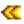
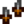
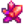
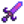

Galaxie-Dolch
Zur Navigation springen
Zur Suche springen
| Galaxie-Dolch | |
| Du hast noch nie etwas Vergleichbares gesehen. | |
| Information | |
| Waffenart: | Dolch |
| Level: | 8 |
| Bezugsquelle: | Abenteurergilde |
| Schaden: | 30-40 |
| Chance auf krit. Schaden: | .02 |
| Stats: |  Geschwindigkeit (+1) Kritische Chance (+1) Gewicht (+5) |
| Abenteuergilde | |
| Kaufpreis: | |
| Verkaufspreis: | |
Der Galaxie-Dolch ist eine Dolchwaffe, die der Spieler in der Abenteurergilde für  35.000 G kaufen kann, nachdem das Galaxie-Schwert erhalten wurde.
35.000 G kaufen kann, nachdem das Galaxie-Schwert erhalten wurde.
Er kann mit Galaxieseele (3) und  Schlackenscherbe (60) in der Vulkanschmiede zu einem  Unendlichen Dolch umgeschmiedet werden.
Geschichte
- 1.1: Eingeführt.
- 1.11: Preis von
 350.000 G auf 35.000 G reduziert.
350.000 G auf 35.000 G reduziert. - 1.5: Kann zu einem Unendlichen Dolch umgeschmiedet werden. Level von 20 auf 8 und Verkaufspreis von 1.000 G auf 400 G gesenkt.